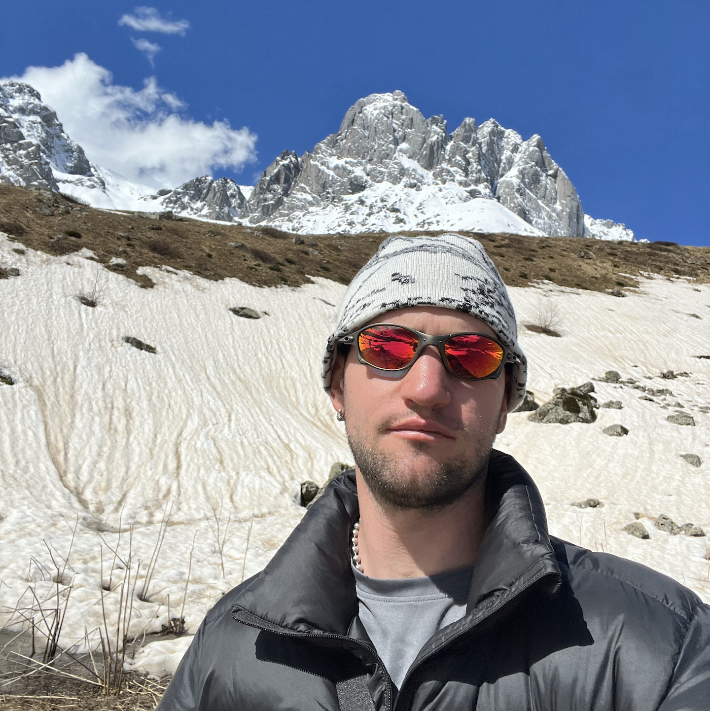

Choongum blends ambient, hip-hop, trance and leftfield rhythms into dreamy, coastal soundscapes. Based in Mexico City, his DJ sets and productions reflect years of quiet exploration—intimate, immersive, and full of unexpected turns.

Choongum grew up on the fringes of San Francisco, absorbing the Bay Area’s rich undercurrent of electronic experimentation and hip-hop surrealism. A quiet observer turned sonic architect, he began crafting hazy, downtempo beats from his bedroom—psychedelic transmissions shaped by a life spent near the ocean and on the move.
Now based in Mexico City after years spent drifting through America, Asia, and beyond, Choongum creates utopian soundscapes that feel at once intimate and otherworldly. His productions ripple with coastal ambience and dreamlike textures—loose, leftfield, often aquatic in tone—yet always anchored by pulsing rhythms and euphoric melodic threads.
As a DJ, he draws from a deep well of genre-defiant influences: ambient, hip-hop, krautrock, trance—anything to dissolve the room into a shared trance. His sets are meticulously curated, each one a singular journey into a world just slightly out of reach, reflecting years of motion and immersion. They unfold gradually, with moments that surprise and shift the energy in unexpected ways and invite listeners into a space that’s entirely his own.